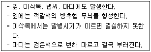
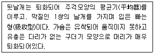
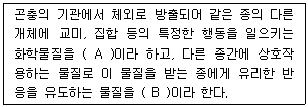

식물보호산업기사 (2013-03-10 기출문제)
1과목: 식물병리학
1. 사과나무 부란병의 대표적인 발병부위는?
- 뿌리
- 줄기
- 잎
- 꽃
(정답률: 80%)

2. Diener가 발견하였으며 핵산이 한 가닥이고 단백질 껍질이 없는 병원체는?
- 바이로이드
- 파이토플라스마
- 바이러스
- 세균
(정답률: 77%)
3. 다음 중 병징(symptom)에 해당되지 않는 것은?
- 점무늬
- 더뎅이
- 균핵
- 오갈
(정답률: 79%)
4. 흰가루병이 발생하지 않는 기주식물은?
- 사과나무
- 오이
- 감자
- 장미
(정답률: 80%)
5. 식물 세균병의 병징과 그 원인의 연결로 옳지 않은 것은?
- 시들음 – 병원세균의 물관부 증식
- 무름 – 펙티나이제(pectinase) 생산
- 이상비대 – 식물 호르몬의 자극
- 잎마름 – 잎의 코르크화
(정답률: 70%)
6. 벼 키다리병의 방제법으로서 합리적인 것은?
- 종자소득
- 윤작
- 중간기주 제거
- 토양소득
(정답률: 82%)
7. 다음 중 식물병원성 곰팡이가 기주식물을 침입하기 위해서 기주의 조직에 형성하는 것 중에서 기주로부터 영양분을 흡수할 때 사용하는 기관은 무엇인가?
- 흡기
- 부착기
- 발아관
- 포자
(정답률: 85%)
8. 다음 병 중 주로 바람에 의해서 옮겨지는 것은?
- 사과나무 근두암종병
- 오이 모자이크병
- 벼 깨씨무늬병
- 배 추무사마귀병
(정답률: 80%)
9. 담배 모자이크 바이러스를 처음으로 순수분리한 공로로 노벨상은 탄 사람은?
- 보든(Bawden)
- 다나까(Tanaka)
- 스미스(Smith)
- 스탠리(Stanley)
(정답률: 70%)
10. 생물적 방제의 설명으로 옳지 않은 것은?
- 저항성 품종만을 이용하는 것이다.
- 환경보전과 지속적 농업에 잘 부합하는 방제법이다.
- Siderophore는 철분 흡수경쟁을 이용하는 생물적 방제법이다.
- Trichderma sp. 의 중기생성(重寄生性) 또는 중복기생성이 생물적 방제에 이용된다.
(정답률: 86%)
11. 벼 흰빛잎마름병이 대발생할 수 있는 환경조건으로 알맞은 것은?
- 태풍, 침수
- 파아지의 증가
- 높새바람, 무방제
- 태풍, 건조
(정답률: 86%)
12. 담배 모자이크 바이러스(TMV)에 관한 내용으로 옳지 않은 것은?
- 구성 핵산은 RNA이다.
- 담배에만 감염할 수 있다.
- 입자의 형태는 막대모양이다.
- 여러 계통(strain)이 존재한다.
(정답률: 91%)
13. 기생식물로 분류되는 식물은?
- 담쟁이 덩굴
- 겨우살이
- 칡
- 나팔꽃
(정답률: 82%)
14. 바이러스병의 내부병징과 관계가 먼 것은?
- 토마토 모용세포의 봉입체
- 맥류 위축병 감염세포의 X-체
- 담배 모자이크바이러스(TMV : tobacco mosaic virus) 감염에 의한 엽록체의 대형화 및 수의 증가
- 감자 잎말림바이러스에 의한 사부조직의 괴사
(정답률: 67%)
15. 식물병원세균의 특징이 아닌 것은?
- 단세포이다.
- 분열로 증식한다.
- 세포벽이 있다.
- 엽록소가 있다.
(정답률: 83%)
16. 진균(眞菌)의 영양기관이 아닌 것은?
- 균사체(菌絲體)
- 균사속(菌絲束)
- 자좌(子座)
- 포자낭(胞子囊)
(정답률: 69%)
17. 다음 병징이 설명하고 있는 벼의 병은?

- 흰잎마름병
- 오갈병
- 도열병
- 깨씨무늬병
(정답률: 75%)
18. 애멸구에 의해서 전염되는 병은?
- 벼 흰잎마름병
- 벼 잎집무늬마름병
- 벼 줄무늬잎마름병
- 오이 모자이크병
(정답률: 73%)
19. 은행나무 잎마름병(엽고병)의 병원균 Pestalotia sp. 는 잎에 어떤 방법으로 주로 침입하는가?
- 수공으로 침입한다.
- 기공으로 침입한다.
- 상처부위로 침입한다.
- 각피로 침입한다.
(정답률: 50%)
20. 다음 중 배추 무사마귀병이 발병하는 토양의 산도는?
- 중성
- 산성
- 알칼리성
- 모두 가능
(정답률: 85%)
2과목: 농림해충학
21. 해충 방제 중 생물적 방제의 장점에 해당하는 것은?
- 효과가 빠르지 않다.
- 환경에 영향을 많이 받는다.
- 안전 농산물 생산이 가능하다.
- 화학농약과 사용시 많은 주의가 요구된다.
(정답률: 78%)
22. 기피제를 놓아 해충을 방제하고자 할 때, 곤충의 어떤 행동을 이용한 것인가?
- 양성주축성
- 음성주축성
- 양성주화성
- 음성주화성
(정답률: 61%)
23. 다음 곤충의 생식계에 대한 설명 중 옳지 않은 것은?
- 난자는 알집을 구성하는 알집소관에서 생성된다.
- 암컷의 생식계는 알집, 수란관, 수정낭, 부속샘 등으로 구성된다.
- 수정낭은 수정이 이루어지는 곳이다.
- 꿀벌의 일벌은 난소가 퇴화되어 있다.
(정답률: 61%)
24. 다음 중 충영을 형성하는 해충은?
- 독나방
- 솔입혹파리
- 어스렝이나방
- 참나무겨울가지나방
(정답률: 73%)
25. 주로 포식성 곤충으로서 해충의 천적으로 이용되는 것은?
- 깍지벌레류
- 무당벌레류
- 진딧물류
- 하늘소류
(정답률: 79%)
26. 최근 도시의 버즘나무 잎이 부분적으로 퇴색되고 피해가 진전됨에 따라 조기에 갈색으로 마르는 피해를 입히는 해충은?
- 진딧물류
- 깍지벌레류
- 방패벌레류
- 흰불나방
(정답률: 58%)
27. 일본으로부터 천적을 수입하여 제주 감귤원의 해충방제에 성공한 사례로서 기록된 해충명은?
- 가루깍지벌레
- 이세리아깍지벌레
- 루비깍지벌레
- 화살깍지벌레
(정답률: 63%)
28. 모기가 벽에 앉을 때 언제나 머리쪽이 위로 향하는데, 이러한 성질은?
- 주광성(走光性)
- 주화성(走化性)
- 주촉성(走觸性)
- 주지성(走地性)
(정답률: 82%)
29. 곤충의 뇌(腦)중에서 시각에 관여하는 것은?
- 앞대뇌
- 뒷대뇌
- 제3대뇌
- 제4대뇌
(정답률: 84%)
30. 저장 중의 식품이나 곡식에 발생하여 피해를 주는 해충이 아닌 것은?
- 화랑곡나방
- 다색일락명나방
- 쌀바구미
- 콩가루벌레
(정답률: 58%)
31. 다음 설명에 해당하는 목(目)은?

- 벼룩목
- 나비목
- 파리목
- 매미목
(정답률: 82%)
32. 다음 곤충의 구조에 대한 설명 중 옳지 않은 것은?
- 가슴은 앞가슴, 가운데가슴, 뒷가슴의 3마디로 구분된다.
- 대개 가슴마디마다 1쌍의 다리를 지니고 있다.
- 앞가슴과 가운데가슴에는 보통 1쌍의 날개를 지니고 있다.
- 날개는 혈관과 기관이 통해 있는 조직이다.
(정답률: 57%)
33. 다음 수목 해충 중 유충상태로 지피물밑이나 수피 틈 또는 가지위에서 월동하는 것은?
- 매미나방(짚시나방)
- 미국흰불나방
- 솔나방
- 소나무좀
(정답률: 45%)
34. 지구상에 곤충이 번창하게 된 원인이 아닌 것은?
- 날개가 있다.
- 몸의 크기가 작다.
- 변태가 가능하여 불리한 환경에 잘 적응한다.
- 온형동물로 부적당한 환경에서 오래 견딜 수 있다.
(정답률: 84%)
35. 나비목 유충이 견사(絹絲)를 분비하는 곳은?
- 전위
- 침샘
- 맹장
- 알피기씨관
(정답률: 60%)
36. 곤충다리의 기본적인 구조는 몇 마디로 이루어져 있는가?
- 3마디
- 4마디
- 5마디
- 6마디
(정답률: 82%)
37. 다음 설명의 A, B에 해당하는 용어는?

- A : hormone, B : pheromone
- A : pheromone, A : allomone
- A : allomone, B : kairomone
- A : pheromone, B : kairomone
(정답률: 76%)
38. 분류학적 위치로 온실가루이의 목(目)은?
- 총채벌레목
- 날도래묵
- 노린재목
- 매미목
(정답률: 41%)
39. 불완전변태를 하는 곤충으로만 나열된 것은?
- 사마귀, 벌
- 날도래, 밑들이
- 딱정벌레, 매미
- 진딧물, 깍지벌레
(정답률: 68%)
40. 향나무하늘소(측백하늘소)의 월동태는?
- 알
- 유충
- 번데기
- 성충
(정답률: 60%)
3과목: 농약학
41. 살비제(살응애제)가 갖추어야 할 특성으로 틀린 것은?
- 성충 및 유충에 대한 효과뿐만 아니라 살란효과도 있어야 한다.
- 잔효기간이 어느 정도 길어야 하며 저항성 유발이 적어야 한다.
- 약제의 침투성이 강하여 살포 후 작물체 전체로 이행되어야 한다.
- 응애류에만 선택적으로 작용하고 천적 및 유용생물에는 안전하여야 한다.
(정답률: 65%)
42. 살균제의 주성분에 의한 분류에 해당되지 않는 것은?
- 유기수은제
- 토양소독제
- 유기주석제
- 무기황제
(정답률: 78%)
43. 치료효과를 거두기 위해 사용되는 약제로 병이 발생한 후에도 충분한 효과를 거둘 수 있는 것은?
- 보호살균제
- 직접살균제
- 종자소독제
- 토양살균제
(정답률: 73%)
44. 베노밀(benomyl)에 대한 설명으로 옳은 것은?
- 살균제이다.
- 황색의 액체이다.
- 알칼리 약제와 혼용이 가능하다.
- 휘발성이 있어 침투이행성이 낮다.
(정답률: 74%)
45. 농작물의 약해원인은 여러 가지가 있다. 다음 중 농약에 원인이 있는 약해가 아닌 것은?
- 불순물 혼합에 의한 약해
- 원제 부성분에 의한 약해
- 경시변화에 의한 유해성분의 생성에 의한 약해
- 동시 사용으로 인한 약해
(정답률: 43%)
46. 농약관리법상 농약의 독성정도에 따른 독성 구분이 아닌 것은?
- 급성독성
- 저독성
- 고독성
- 맹독성
(정답률: 81%)
47. 50% DDVP 유제 100mL를 0.01%의 용액으로 하여 살포하려고 한다. 희석에 소요되는 물의 양은? (단, 50% DDVP의 비중은 2.0이다.)
- 500L
- 1000L
- 5000L
- 10000L
(정답률: 57%)
48. 농약의 제형 중 수화제(WP)의 분말도를 측정할 때 적용하는 메시(Mesh)의 규격은?
- 200메시
- 250메시
- 325메시
- 350메시
(정답률: 62%)
49. 농약의 제제에 사용되는 계면활성제(Surfactant)의 작용으로서 가장 거리가 먼 것은?(오류 신고가 접수된 문제입니다. 반드시 정답과 해설을 확인하시기 바랍니다.)
- 활착작용
- 습윤작용
- 분산작용
- 세정작용
(정답률: 48%)
50. 농약을 식별하기 위해 라벨의 바탕 색깔을 달리하는데 황색 라벨은 어떤 약제를 의미하는가?
- 제초제
- 살균제
- 살충제
- 생장조정제
(정답률: 78%)
51. 아미드계 계통의 잡초발생전 토양처리용 제초제로서 잔디에 주로 사용되는 것은?
- 2,4-D
- 메트리뷰진
- 아이속사벤
- 아짐설퓨론
(정답률: 47%)
52. 곤충의 먹이가 되는 부분에 약제를 뿌러 줄기나 잎을 갉아먹는 해충으로 하여금 먹이와 함께 소화기에 독성을 흡수시켜 살충력을 나타내는 약제를 무엇이라고 하는가?
- 독제
- 접촉제
- 침투성 살충제
- 훈증제
(정답률: 69%)
53. 농약의 작물잔류에 미치는 영향 중 가장 거리가 먼 것은?
- 농약의 이화학적 특성
- 작물의 특성
- 기상 및 토양환경조건
- 농약잔류허용량
(정답률: 57%)
54. 유기인계 살충제의 일반적인 성질에 대한 설명으로 옳은 것은?
- 동물의 체내에서 분해가 느리다.
- 알칼리에는 용이하게 분해된다.
- 광선에 의한 분해가 일어나지 않는다.
- 인측에 대한 독성이 약하다.
(정답률: 72%)
55. 다음 중 보조제의 구비조건으로 옳지 않은 것은?
- 작물에 피해가 없어야 한다.
- 주제를 변질시키지 않아야 한다.
- 주제나 용제와 친화성이 있어야 한다.
- 경수에는 사용할 수 없어야 한다.
(정답률: 87%)
56. 분제(粉劑)의 제조방법에 대한 설명으로 옳지 않은 것은?
- 제품조성의 대부분을 증량제가 차지하고 있으므로 품질은 증량제의 이화학적 성질에 영향을 받는다.
- 물리성 개량제로서 PAP가 사용되며 분해방지제로서 유기산 등이 사용된다.
- 물리성으로 중요한 것은 분말도, 토분성 및 분산성 이다.
- 주성분이 액상인 경우 Bentonite나 모래 등에 주제를 흡착시켜 제조한다.
(정답률: 52%)
57. 제초제의 살초작용인 이행형 제초제의 접촉형 제초제에 대한 설명으로 틀린 것은?
- 접촉형 제초제는 생세포에 직접 작용하여 그 부분을 파괴하여 살초효과를 나타낸다.
- 접촉형 제초제는 작용이 속효적으로 나타난다.
- 이행형 제초제는 수분이나 양분과 함께 약제가 식물체내로 들어간다.
- 이행형 제초제는 식물체에 처리한 제초제가 뿌리로부터 위쪽으로만 이동한다.
(정답률: 81%)
58. 과실의 숙기를 촉진시키는데 사용되는 에틸렌계의 약제는?
- 에테폰(ethephon)
- 지베렐린(gibberellic acid)
- 아이비에이(IBA)
- 도마도톤(4-CPA)
(정답률: 80%)
59. 토양소독용 전문약제로서 연작장해를 막아주며 건전한 토양을 만들어주는 효과가 있는 살충 살균제는?
- 디클로르보스
- 펜토에이트
- 페이트로진
- 메탐소듐
(정답률: 53%)
60. 농약 살포법 중 분무법(spraying)에 대한 설명으로 옳지 않은 것은?
- 분무기는 별도의 공기를 주입하지 않고 약액에 직접압력을 가하여 미세한 출구로 분사하는 구조이다.
- 살포 액적의 입경은 보통 0.1~0.2mm 범위이다.
- 일반적인 희석용 제형으로부터 조제한 살포액의 다량살포에 적합하다.
- 과수전용으로 사용되는 고속살포기(speed sprayer)가 대표적이다.
(정답률: 52%)
4과목: 잡초방제학
61. 벼 농사에서 잡초의 피해가 가장 많은 재배양식은?
- 손이앙재배
- 건답직파재배
- 기계이앙재배
- 담수직파재배
(정답률: 82%)
62. 우리나라 맥류포장에서 문제되는 화본과 잡초는?
- 냉이
- 뚝새풀
- 별꽃
- 벼룩나물
(정답률: 70%)
63. 제초제의 유효성분이란?
- 제초제 중 중량제의 량
- 제초제 중 계면 활성제의 량
- 제초제 중 간접적으로 제초효과를 발휘하는 성분
- 제초제 중 직접적으로 제초효과를 발휘하는 성분
(정답률: 85%)
64. 논에 오리를 방사하여 잡초를 방제하는 방법은?
- 경종적 방제법
- 생물적 방제법
- 화학적 방제법
- 기계적 방제법
(정답률: 90%)
65. 우리나라 잡초 분포에 대한 설명이 옳은 것은?
- 생태적으로 북방형 잡초의 분포가 크다.
- 겨울작물보다는 여름작물에 대한 잡초경향 문제가 상대적으로 크다.
- 논의 잡초 발생 최성기는 5월 중순부터 6월 초순으로 볼 수 있다.
- 여름작물 포장에는 뚝새풀과 벼룩나물이 우점종이다.
(정답률: 70%)
66. 다음 중 제초제가 구비하여야 할 조건이 아닌 것은?
- 값이 싸야 한다.
- 효능이 좋아야 한다.
- 안정성이 높아야 한다.
- 토양 중에 잔류기간이 길어야 한다.
(정답률: 89%)
67. 병해충문제와 비교하여 잡초문제의 특성을 잘못 기술한 것은?
- 잡초는 박멸하여야 한다.
- 잡초문제는 정체적으로 일어난다.
- 허용한계수준으로 피해를 판단한다.
- 문제의 진정성이 완만하다.
(정답률: 84%)
68. 잡초의 번식에 관한 설명으로 옳지 않은 것은?
- 일년생 잡초는 자가수정에 의해서만 번식한다.
- 돌피, 바랭이, 냉이는 유성번식을 한다.
- 영양번식은 포복경, 지하경, 인경, 구경 등을 통해 이루어지는 것을 말한다.
- 다년생 잡초는 주로 영양번식과 유성번식을 겸한다.
(정답률: 73%)
69. 식물의 여러 기관에서 특정물질이 분비되거나 또는 유출 되어 주변식물의 발아나 생육을 억제하는 작용은?
- 상호대립억제작용
- 상가작용
- 상승작용
- 상대지속억제작용
(정답률: 87%)
70. 잡초를 생활사(수명)면에서 본 분류 중 옳지 않은 것은?
- 1년생
- 월년생
- 다년생
- 3년생
(정답률: 84%)
71. 논에서 사초과인 올방개를 방제하기 위하여 사용되어지는 후기 경엽처리 제초제는?
- 론스타(oxadiazon)
- 밧사그란(bentazone)
- 그라목슨(paraquat)
- 라쏘(alachlor)
(정답률: 64%)
72. 못자리용 제초제 Bentazon의 작용성과 사용방법이 맞지 않은 것은?
- 경엽처리용 벼 생육 중기용 제초제이다.
- 화본과 잡초를 살초한다.
- 너도방동사니의 살초효과가 뚜렷하다.
- 올방개 등과 같은 방동사니과 잡초의 살초효과가 뚜렷하다.
(정답률: 58%)
73. 문제잡초의 일반적인 특성이 아닌 것은?
- 광합성 효율이 높고 생장이 빠르다.
- 종자 또는 영양번식을 하여 생식력이 높다.
- 불량한 환경조건에 잘 적응한다.
- 종자의 휴면성이 크지 않다.
(정답률: 83%)
74. 작물의 경합력을 높이는 방법으로 가장 적합한 것은?
- 작물을 직파재배 하는 것이 좋다.
- 연작하여 잡초의 생육을 감소시킬 수 있다.
- 경운 후 작물 종자를 줄뿌림(조파)하여 생육시킨다.
- 주어진 토양, 수분 및 기후조건에 적응력이 큰 작목이나 품종을 선택한다.
(정답률: 80%)
75. 작물과 잡초의 경합에 미치는 영향이 크지 않은 것은?
- 작물의 품종
- 재식밀도
- 시비방법
- 병해충 방제
(정답률: 62%)
76. 다름과 같이 작물과 잡초가 경합하고 있을 때 작물 수량손실이 가장 높은 경우는?
- C3 작물과 C3 잡초
- C4 작물과 C3 잡초
- C4 작물과 C4 잡초
- C3 작물과 C4 잡초
(정답률: 86%)
77. 실제 포장에서 경합이 가장 크게 일어나는 작물과 잡초의 조합은?
- 벼와 명아주
- 보리와 바랭이
- 옥수수와 별꽃
- 콩과 돌피
(정답률: 57%)
78. 종자는 최종적으로 조사(照射)되는 광질에 의하여 발아유기가 다른데 적색광(660nm)과 적외선광(730nm)을 교체하여 조사(照射)하였을 때 발아가 유기 되지 않는 것은?
- 적색광 조사 → 적외선광 조사
- 적외선광 조사 → 적색광 조사
- 적색광 조사 → 적외선광 조사 → 적색광 조사
- 적외선광 조사 → 적외선광 조사 → 적색광 조사
(정답률: 55%)
79. 논에 발생하는 영양번식 다년생잡초로만 나열된 것은?
- 올미, 물달개비, 올방개, 가래
- 강피, 가래, 올방개, 너도방동사니
- 올미, 가래, 올방개, 알방동사니
- 올미, 가래, 올방개, 너도방동사니
(정답률: 62%)
80. 재배방법에 의한 식물경합의 원리에 대한 설명으로 옳은 것은?
- 지표면을 먼저 점유한 식물은 후에 발생한 식물보다 경합에 불리하다.
- 이앙재배는 직파재배보다 잡초에 대한 경합력이 강하다.
- 작물의 정상적인 재식밀도보다 약간 밀식하는 것이 잡초에 대한 경합력이 낮다.
- 작물의 재식밀도가 높으면 높을수록 잡초에 대한 작물의 경합력이 낮아진다.
(정답률: 80%)